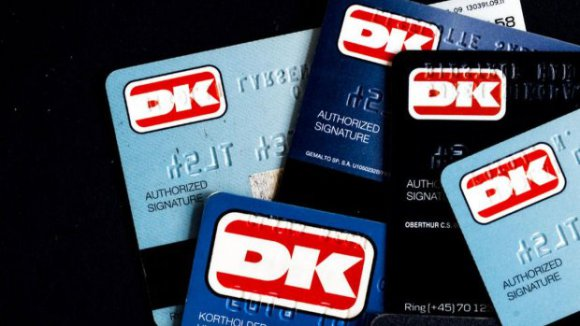
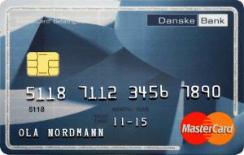
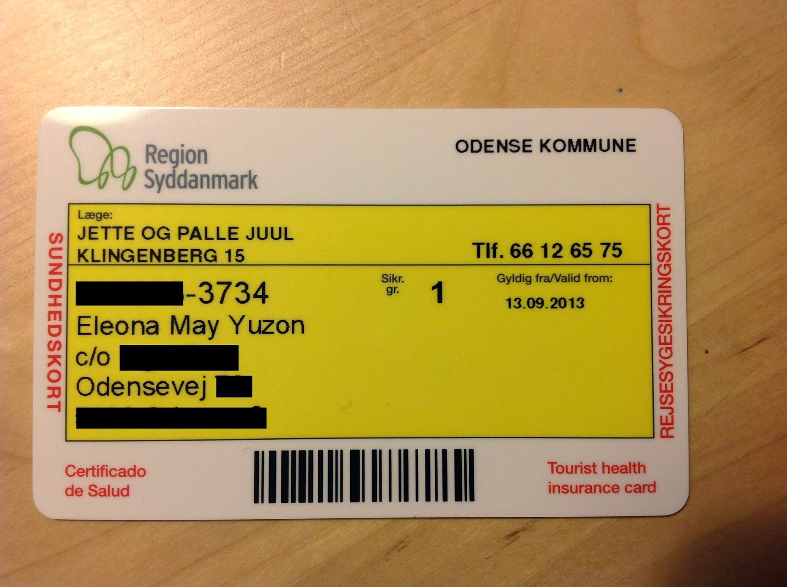
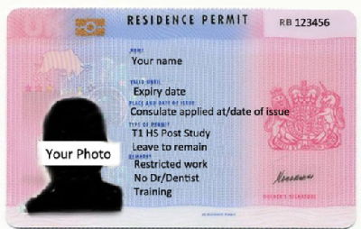

5,312 words in total, 18 minutes required. 在奥尔堡的第一篇文章顺利完工，跑了一个月令人心碎的实验，总是渴望能在进展中力臻完美，却发现走得越深看到的是更大的缺陷，踌躇不定甚至一度想推翻重来，好再deadline一过，咱又续了一条新命。 工作学习体验生活一刻不停，喘口粗气的间隙，偷闲记录我的丹国见闻。作为一个生活服务类的博客栏目，咱们的宗旨就是在消磨阅读的时光中，让各位看官您能顺便了解点见闻，丰富下所知。咱们花了五辑的篇幅穿插着回溯了一下吃、住、行。既然是说起这些民生民计的内容，我们这一次来谈谈和丹国各种公共机构打交道的那些事儿，当然顺便提一提这些有关部门发放的有关卡（gou）片（pai）。这些内容些许乏味，但是对于我而言，是旅欧生活中一个很难再次细细去体验的部分。 26. 市政厅和CPR-Number 市政厅（kommune，这个词多半来自日耳曼语系）相当于我国各大城市的市民中心。然而，它涉及的业务范围更大，几近涵盖了丹麦人从生至死所有与国家相关的一切事宜。来丹工作学习的异籍人士，自然也不可能不与它发生交集。从办理ID身份证明开始，它像是一本书的第一章，基础却又不可或缺。 从哪儿来入手介绍市政厅呢？那么首先，我们来看看上面这个极易生惑的LOGO，我想了想，一定是某位信奉阿拉的同志设计的。你看这左月亮右星星，嗬！上头还顶一个圆包头的殿顶，那么我要问了，你们这是什叶派还是逊尼派了？唯一令人欣慰的是，那下面飘的几根波纹一定是在说明咱这靠海，有水，没猜错吧？ Aalborg Kommune Logo 虽说LOGO不尽人意，但奥尔堡市政厅，位置显著坐落中心，面对潮流经典依旧（抱歉，我的房地产广告看多了），来到奥尔堡的第一天，我就动身前去市政厅，向工作人员出示护照和签证，在得到确认后，领取到丹居留所的身份标识——CPR Number。CPR Number，Civil Registration Number，公民注册号码，说白了就是一个身份证号，每个人有一个，格式上可表示为DDMMYY-XXXX，其中前六位是出生的日、月、年，而后四位则是一个四位编号，类似于咱们身份证号码的最后四位，用于区分生日相同的不同公民。由于丹麦本国人口只有不到600W，因此当然不需要譬如我国如此复杂的18位身份编号系统，自然，这10位的号码（6位生日+4位随机数）也无法通过身份证号判断其来自于哪一个区域，只有一个对于年龄的直观判断，然而这的确是非常关键和有效的一个简单手段用于辨别身份。 刚拿到手的CPR Number记录在一张A4的纸张上，这种方式显然不是理想的呈现方式（事实上CPR Number被印刷在一张印制的黄卡之上，在28小札上会娓娓道来）。有了CPR Number，那么恭喜您，您在丹麦的任何活动，学习、工作、赚钱、购物、租房、置业这些都有了法律上的保障。这个号码需要牢牢记住，因为几乎和所有公共机构打交道的过程中，这个编码就是阿里巴巴的“芝麻开门”密语，为你打开一扇扇不同的大门。 除了CPR Number之外，还有一样十分重要的装备（对不起，咱们真的不是在玩第一人称游戏）需要领取，那就是Nem ID， 这个名字乍一看，也有些类似于身份证，事实上它是丹麦数字世界中的安全通行证，全称叫做“个人数字签名一体化系统”，听起来有些绕口和令人困惑，那么它究竟是个什么东西呢？如果你有一块网银的动态口令卡（牌）、一张曾经使用过的Q币充值卡，那么你大概知道，就是类似的这么一个东西了。不同的是，这个Nem ID是统一使用的，意味着无论你登录网银亦或你进入某一个有安全协议的web应用，都需要通过这一层障碍用以确保登录用户的合法身份。因此，在得到CPR Number的那一刻，身份被当场确认，那么就可以亲手领取到Nem ID。 随身携带的CodeBook，原始的方式 Nem ID和国内广泛使用的动态口令牌相比的确是落伍了，重点在于它不是动态的！除了有对应的用户名和用户设定的密码之外，拿到手的并不是一个和时间戳对应的电子口令牌，而是一本纸质印刷的密码本code book！每次输入Nem ID的用户名密码后，系统会给出一个四位的索引数字码，这时候你要拿起这本code book去查找对应的后六位码输入并完成登录过程，想起来了什么？我只记得初一学过查三角函数表历历在目！好在这本code book不算大，大概只有150个数字码，那么问题来了，当用完了之后怎么办？答案是，有关部门给你寄一本新的！（所以说身份号码和个人的住址在丹麦是同等重要的）也许是意识到这种方式如今已经有些过时，今年下半年开始，丹麦国内已经掀起了换代的潮流，使用类似于动态电子口令牌的终端来替代需要不停邮寄的code book，考虑到国家大小规模，这件事情在丹麦可以比较快的完成，这是人口小国的一个好处吧大概。 27. 银行和银行卡在丹麦工作学习，为了方便，必须要有一张本地的银行卡，去一趟银行也是势在必行的。丹麦目前主要的银行有Danske bank，Nordea bank，SYD bank等，除此之外还有许多小型和地方的银行。而卡片方面，在本地居留超过3个月之后具备资格申请信用卡，否则的话就只能申领一张Debit Card借记卡。除了VISA、Master、美国运通这些银联认证系统外，丹麦本土也存在一种类似中国银联的组织，称之为Dankort。 红色的Dankort标识，非常明显 前面已经提及，丹麦使用了独立于欧元体系之外的丹麦克朗，那么作为欧盟成员国之一，其公民如何和其他国家进行便利的货币流通呢？事实上，用户可以随时从ATM机器快速取到欧元，但需要一定额度的手续费用（无论取款数额多少，每次手续费相同，为35DKK）。 当拥有了一个CPR Number，无论你办理多少张卡，这些卡片总会与你的CPR Number相关，通过这种方式可以非常有效的监督资金的流动（与之对应，每一个企事业单位都有一个公共的编号，用于标识确认其唯一性和合法性）。这个系统拥有另外一个名字——NemKonto，NemKonto和CPR Number一样，每个人有唯一一个，固然一个人可以拥有多张借记卡或者信用卡，但是NemKonto是固定不变的，其他卡片与之绑定，如此言来，只要知道一个人的NemKonto或者CPR Number，那么就可以完成转账、扣款等相关内容，保证了在事务过程中不会出现输入上的错误。当你首次办理银行账户时，柜员都会询问是否开通NemKonto并且将申领的银行卡绑定，这样子，雇方仅需要知道雇员的CPR Number，就可以将工资、补助、奖金等打入对应的NemKonto中。 DanskeBank推出的MasterCard，可以取出双币 丹麦的银行卡片正面是卡号，背面则会印上对应的Konto Number，方便使用者将账户号告知给他人。而支付密码的Pin Code是一个4位数字，短于国内使用的6位。用上了银行卡，也当然少不了使用网上银行，我选择的DanskeBank，在其网站上提供了eBanking的功能，当然，这个时候需要使用NemID进行安全登录，随后就可以看到查看明细、进行转账等业务。通过eBanking向朋友转账时，一次会收取10DKK的费用，无论是同一银行还是跨行皆如此，不过它是从接收的一方扣去这部分费用，因此每次要记住多加上10DKK，但是如果你要转钱给我的话，多按几个零我也是可以接受的，不会怪你。 28. 医院和黄卡来到丹麦的第一个月，就因为切伤手指的这一意外，被迫去体验了一下丹麦政府提供的“免费医疗”。“免费医疗”看起来是一扇金光闪闪的大门，想要进去，就需要一把同样金光闪闪的金钥匙。这把金钥匙就是黄卡了！黄卡之所以叫做黄卡，就是因为它是黄色的（原谅我给出的信息增益为0）。这张卡片等值于身份证，因为不仅仅在看医生时需要出示，在其他需要身份证明的场合都可以拿出这张卡片来表明个人身份。在下图中的下方矩形大框中，第一行黑体字写着的就是CPR Number，即身份证号码（横杠后四位为随机码），第二行写着姓名，第三行到第五行写着家庭住址，这样说来，一旦地址发生变更，必须要前往市政厅更换一张新的黄卡，当然是免费的啦。 黄卡，一张等价的身份证 那么，拿着这张黄黄的卡片，如何去医院和诊所享受免费医疗呢？上图中，在黄卡的上方小矩形框中，写着你的私人医生姓名住址以及联系电话。在丹麦，每一位拥有黄卡的公民，都会有相应分配的私人医生，当然，这个关系并不是一一对应的，也许一位私人医生同时担负着几十甚至到百人的身体健康责任。国家给每位可以拥有行医资格的大夫不菲数额的资金，供他们出钱建立自己的诊所，雇佣有资历的护士和秘书，购买医疗器械和必要的药品，面对一些日常的小病小患，私人医生诊所建立起了第一条防线。一旦出现了突发情况或者疑难杂症，从而超出了私人医生的范畴，那么他还需要担负联络人的职责，尽快联系医院，帮助患者进入大型医院就诊。因此，医院建立了医疗卫生系统的第二条防线。那么在两道防线之前，则是大大小小零落在城市中随处可见的药房。 为了有一个直观的解释，我只能“以身试法”为大家来解读下这个过程。我的手指是在做晚饭切菜的时候被锋利的菜刀伤害的，顿时血流不止，幸好我随身备了一些酒精和棉花，用清水和酒精消毒后使用创可贴进行了固定，由于伤口比较大，我固定很紧，以免失血太多，实际上，这个时候，可以尝试拨打突发急救电话911(类似于国内110、112、119的集合)，那么可以绕过私人医生直接和医院取得联系，适合一些非常突发的情况，考虑到我自身采取的保护措施，我决定第二天前去诊所进行进一步检查。 在丹麦，医生也不是随时随地看的，首先需要通过网络或者电话预约，预约成为了一项非常关键的操作。而为了第二天大早上绕开预约直接看自己的私人医生，一个好的方法就是在早上8点之前到达诊所，这个时候医生还没有任何预约，可以抽出时间来帮忙。大早赶公交来到诊所，果真没有人，但是医生和护士都已经正常上班，为一天的忙碌做着准备工作。我麻利的出示了黄卡，护士接过卡片刷了一下磁条，接下来他们就有义务替我查看伤口帮忙包扎，不得不说，护士的手法比较粗糙，但是她的热情弥补了这一切，仔细询问是在切蔬菜还是肉类时发生意外的。当伤口被重新清理干净后，我的私人医生——一位老先生就亮相匆匆的看了一眼，然后和护士用丹麦语谈论了一番，最后又用英语向一旁茫然的我解释了一通，他问我有没有接种过破伤风，但是本人的词汇量实在是无法掌握这个单词，最后我机智的掏出了google翻译才给出了一个肯定的回答，他开心的笑了笑，告诉我伤口不用缝，但是给我制定了一个时间表，分两次再回到诊所来检查一番，并且给了我一些必需药物，但是护士向我解释到，药物可以免费提供给我，但是换药上的绷带需要自己到药房去购买。因此，对于免费医疗，看病是免费的，但是药物却是需要自己负担的！ 离开前，根据时间表，护士向我进行询问商定好了预约来检查的时间，事实上，预约来看医生的人还是安排的满满的，后来来复查时，我都是在诊所的等候室内排号进入，可见丹麦群众虽然没有定期的体检服务，但是都喜欢有事没事来和医生寒暄几句（然而，丹麦人对男孩的一种“坚韧教育”使得丹麦男人很排斥看医生）。另外，丹麦的牙医要独立在免费医疗之外，如果需要看牙医，也要通过私人医生帮助预约，并且按照小时收费，费用高昂，建议来前保护牙齿，吃嘛嘛香的就是最好不过了。 29. 警察局和粉卡除了和诊所有了“亲密接触”，我还顺道进了一趟“局子”。当然，自然不是作为违法分子，虽然那天我手上绑着大绷带看起来确实像参与群殴的。之所以会进警局，是因为另外一张和黄卡一样重要的卡片——粉卡，这张卡有意思了，我来给大家解释下，为什么会叫做粉卡呢，因为它是粉色的，哈哈。粉卡实际上是Residence Card，就是居留许可证明，它很清晰地表明了作为一个合法的居留者，在某一个时间阶段可以在丹麦生活和工作。这张卡片在一些其他的欧盟国家也有，实际上，在其他的申根国家出示它时，可以等同于出示申根签证，它具有不错的效力，相比护照携带方便。 相比黄卡，粉卡更像一张身份证 粉卡的左侧，是在申请丹麦签证时，在大使馆内采集的个人图片（除了照片，还采集了指纹和签名，称之为生物特征采集，我是在上海完成的采集）。右侧的第一行黑字，给出了姓名，随后的几行，分别写明了居留的有效时间、发放机构、居留原因等等。这张卡片，能够很清楚的辨别外籍人士来丹居留的原因，便于调查和检察。丹麦政府要求来丹人员在到达后的一到两周内去亲自领取这张粉卡，需要去就近的警局进行登记。但是事实上，在个人申请得到黄卡之后，移民局便会相应地通过邮寄的方式将粉卡寄到个人住址。粉卡不是黄卡，过去有人因为误将黄卡认为粉卡，而没有前去领取而导致最后在离境时被认为非法居留的例子发生。我非常注重这件事情，然而一个月过去了，我始终没有收到这张粉色的卡片，令我有些着急，最后我被迫前往警局，希望能够亲自申领得到这张卡片，最后却很意外地被“踢了皮球”（看来全世界都是一个样，纵然丹麦人很热情友好）。首先到达警局后，被告知需要到警局后门的移民局去看看，结果在移民局排了一个上午的号，最后移民局的官员很潇洒的告诉我，他也无能为力，给了我一个发放卡片部门的电话，最终，通过电话交谈，他们表示，已经寄出，但是查不出来为什么没有收到，但是答应立即给我重新寄一张，最终，又过了一个月，我成功收到了这张来之不易的粉卡~ 30. 税务局和税卡说了这么多卡，你一定认为我会停下来了吧？不好意思，今天的主题就是一个字————卡！接下来我要继续恶心地给大家介绍下最后一张卡，来自税务局的税卡，这张卡我最不喜欢，原因如下：第一，它根本就没有一张物理上存在的卡，其实就是一个电子记录，用于表明了你需要交多少税；第二，有了这张卡意味着你至少要交出三分之一的工资给税务局，这一点自然是有些讨厌的嘛。纵然娇羞如我；第三，就是税务局动作太慢，办卡慢解释问题也慢，着实让我觉得把扣钱这一艰巨任务交给他们太不靠谱。 税卡的办理并不是必须的，前提在于你受雇于丹麦雇方，并且直接从雇方领取工资、保险金和奖金。我恰好满足这些条件，因此来到学校后，秘书告诉我除了把银行账户告知她之外，还需要去办理税卡，这些完成之后才会将相应的工资发放给我。不同于其他的卡是在柜台上办理，税卡可以在线申请，但是很有意思的是，并不是填写在线的表单，而是打印出纸质版本后填写签字并且扫描后连同所有材料一起提交。提交后一个星期，他们会根据你的情况，为你计算出相应的税率，这个税率涉及内容之广，令人感到极其繁琐，从国籍性别年龄到婚姻家庭收入，从上下班距离到是否开车是否要交过桥过路费，从每年上班休几天带薪假到一年到国外要交通出几次差，一个表格就有8页，填的人心力憔悴，而且，填这张表不是为了拿钱，而是为了扣钱，我瞬间感觉没有了力量，虽然我知道以自己的力量给丹麦政府和人民做出了一些不可磨灭（这四个字一定要加上！）的贡献，但是扣钱嘛~谁说不是呢？ 在丹麦，税收有一些启发性规则，例如，家庭中生育的孩子越多，则税率相应越低，原因在于供养孩子需要更多的钱，而政府通过这种方式鼓励繁衍；再如，特殊人才比如科学家、运动员、厨师等等，可以在一定的年限内享受特殊的低税率服务，方便人才进口。 总之，税收问题是一个非常负责和繁琐的工作，因此我也没有丝毫责备税局工作效率底下的意思，但是几次三番在税局询问碰壁的经历还是令我很是不爽，大概是我觉得他们太死板，一点都不能体会一颗在寒风中等待的瑟瑟发抖的心说导致的吧。 【完结】 ← Previous Post Next Post→ To show LiveRe comment, please use JavaScript Table of Contents 26. 市政厅和CPR-Number27. 银行和银行卡28. 医院和黄卡29. 警察局和粉卡30. 税务局和税卡